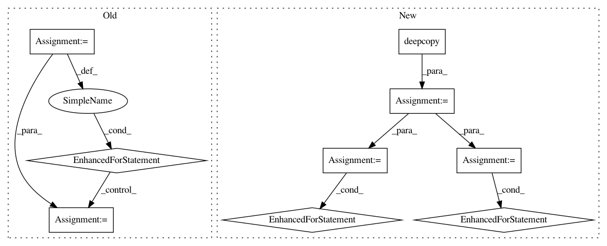

5b48f9a9c097d26d395873044ceaa1a0b886682a,solutionbox/code_free_ml/mltoolbox/code_free_ml/analyze.py,,run_cloud_analysis,#Any#Any#Any#Any#Any#,161
Before Change
numerical_vocab_stats = {}
for col_schema in schema:
col_name = col_schema["name"]
col_type = col_schema["type"].lower()
transform = features[col_name]["transform"]
// Map the target transfrom into one_hot or identity.
if transform == constant.TARGET_TRANSFORM:
if col_type == constant.STRING_SCHEMA:
transform = constant.ONE_HOT_TRANSFORM
elif col_type in constant.NUMERIC_SCHEMA:
transform = constant.IDENTITY_TRANSFORM
else:
raise ValueError("Unknown schema type")
if transform in (constant.TEXT_TRANSFORMS + constant.CATEGORICAL_TRANSFORMS):
if transform in constant.TEXT_TRANSFORMS:
// Split strings on space, then extract labels and how many rows each
// token is in. This is done by making two temp tables:
// SplitTable: each text row is made into an array of strings. The
// array may contain repeat tokens
// TokenTable: SplitTable with repeated tokens removed per row.
// Then to flatten the arrays, TokenTable has to be joined with itself.
// See the sections "Flattening Arrays" and "Filtering Arrays" at
// https://cloud.google.com/bigquery/docs/reference/standard-sql/arrays
sql = ("WITH SplitTable AS "
" (SELECT SPLIT({name}, \" \") as token_array FROM {table}), "
" TokenTable AS "
" (SELECT ARRAY(SELECT DISTINCT x "
" FROM UNNEST(token_array) AS x) AS unique_tokens_per_row "
" FROM SplitTable) "
"SELECT token, COUNT(token) as token_count "
"FROM TokenTable "
"CROSS JOIN UNNEST(TokenTable.unique_tokens_per_row) as token "
"WHERE LENGTH(token) > 0 "
"GROUP BY token "
"ORDER BY token_count DESC, token ASC").format(name=col_name,
table=table_name)
else:
// Extract label and frequency
sql = ("SELECT {name} as token, count(*) as count "
"FROM {table} "
"WHERE {name} IS NOT NULL "
"GROUP BY {name} "
"ORDER BY count DESC, token ASC").format(name=col_name,
table=table_name)
df = _execute_sql(sql, table)
// Save the vocab
string_buff = six.StringIO()
df.to_csv(string_buff, index=False, header=False)
file_io.write_string_to_file(
os.path.join(output_dir, constant.VOCAB_ANALYSIS_FILE % col_name),
string_buff.getvalue())
numerical_vocab_stats[col_name] = {"vocab_size": len(df)}
// free memeory
del string_buff
del df
elif transform in constant.NUMERIC_TRANSFORMS:
// get min/max/average
sql = ("SELECT max({name}) as max_value, min({name}) as min_value, "
"avg({name}) as avg_value from {table}").format(name=col_name,
table=table_name)
df = _execute_sql(sql, table)
numerical_vocab_stats[col_name] = {"min": df.iloc[0]["min_value"],
"max": df.iloc[0]["max_value"],
"mean": df.iloc[0]["avg_value"]}
elif transform == constant.IMAGE_TRANSFORM:
pass
elif transform == constant.KEY_TRANSFORM:
pass
else:
raise ValueError("Unknown transform %s" % transform)
// get num examples
sql = "SELECT count(*) as num_examples from {table}".format(table=table_name)
df = _execute_sql(sql, table)
num_examples = df.iloc[0]["num_examples"]
After Change
// Make a copy of inverted_features and update the target transform to be
// identity or one hot depending on the schema.
inverted_features_target = copy.deepcopy(inverted_features)
for name, transform_set in six.iteritems(inverted_features_target):
if transform_set == set([constant.TARGET_TRANSFORM]):
target_schema = next(col["type"].lower() for col in schema if col["name"] == name)
if target_schema in constant.NUMERIC_SCHEMA:
inverted_features_target[name] = {constant.IDENTITY_TRANSFORM}
else:
inverted_features_target[name] = {constant.ONE_HOT_TRANSFORM}
numerical_vocab_stats = {}
for col_name, transform_set in six.iteritems(inverted_features_target):
// All transforms in transform_set require the same analysis. So look
// at the first transform.
transform_name = next(iter(transform_set))
if (transform_name in constant.CATEGORICAL_TRANSFORMS or
transform_name in constant.TEXT_TRANSFORMS):
if transform_name in constant.TEXT_TRANSFORMS:
// Split strings on space, then extract labels and how many rows each
// token is in. This is done by making two temp tables:
// SplitTable: each text row is made into an array of strings. The
// array may contain repeat tokens
// TokenTable: SplitTable with repeated tokens removed per row.
// Then to flatten the arrays, TokenTable has to be joined with itself.
// See the sections "Flattening Arrays" and "Filtering Arrays" at
// https://cloud.google.com/bigquery/docs/reference/standard-sql/arrays
sql = ("WITH SplitTable AS "
" (SELECT SPLIT({name}, \" \") as token_array FROM {table}), "
" TokenTable AS "
" (SELECT ARRAY(SELECT DISTINCT x "
" FROM UNNEST(token_array) AS x) AS unique_tokens_per_row "
" FROM SplitTable) "
"SELECT token, COUNT(token) as token_count "
"FROM TokenTable "
"CROSS JOIN UNNEST(TokenTable.unique_tokens_per_row) as token "
"WHERE LENGTH(token) > 0 "
"GROUP BY token "
"ORDER BY token_count DESC, token ASC").format(name=col_name,
table=table_name)
else:
// Extract label and frequency
sql = ("SELECT {name} as token, count(*) as count "
"FROM {table} "
"WHERE {name} IS NOT NULL "
"GROUP BY {name} "
"ORDER BY count DESC, token ASC").format(name=col_name,
table=table_name)
df = _execute_sql(sql, table)
// Save the vocab
string_buff = six.StringIO()
df.to_csv(string_buff, index=False, header=False)
file_io.write_string_to_file(
os.path.join(output_dir, constant.VOCAB_ANALYSIS_FILE % col_name),
string_buff.getvalue())
numerical_vocab_stats[col_name] = {"vocab_size": len(df)}
// free memeory
del string_buff
del df
elif transform_name in constant.NUMERIC_TRANSFORMS:
// get min/max/average
sql = ("SELECT max({name}) as max_value, min({name}) as min_value, "
"avg({name}) as avg_value from {table}").format(name=col_name,
table=table_name)
df = _execute_sql(sql, table)
numerical_vocab_stats[col_name] = {"min": df.iloc[0]["min_value"],
"max": df.iloc[0]["max_value"],
"mean": df.iloc[0]["avg_value"]}
// get num examples
sql = "SELECT count(*) as num_examples from {table}".format(table=table_name)
df = _execute_sql(sql, table)
num_examples = df.iloc[0]["num_examples"]
In pattern: SUPERPATTERN
Frequency: 3
Non-data size: 9
Instances
Project Name: googledatalab/pydatalab
Commit Name: 5b48f9a9c097d26d395873044ceaa1a0b886682a
Time: 2017-06-14
Author: brandondutra@google.com
File Name: solutionbox/code_free_ml/mltoolbox/code_free_ml/analyze.py
Class Name:
Method Name: run_cloud_analysis
Project Name: drckf/paysage
Commit Name: 2921cade4187f926f89b35a4f56a9cb54fa2e2f3
Time: 2017-03-17
Author: charleskennethfisher@gmail.com
File Name: paysage/optimizers.py
Class Name: RMSProp
Method Name: update
Project Name: googledatalab/pydatalab
Commit Name: 5b48f9a9c097d26d395873044ceaa1a0b886682a
Time: 2017-06-14
Author: brandondutra@google.com
File Name: solutionbox/code_free_ml/mltoolbox/code_free_ml/analyze.py
Class Name:
Method Name: run_local_analysis